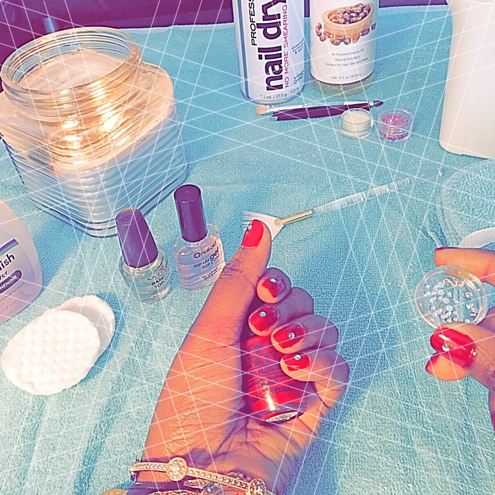

Easy Do It Yourself Manicure
H
appy 2018. I hope this year is kind to you and your loved ones. I want to take this opportunity to thank all of you for your support and for following my blog and especially thanks to everyone who have subscribes to my email notifications. I truly appreciate it! Pardon me I have been away from my blog for a while, I was tending to my immigration process. I hope to share the details with all of you once everything is through, to help anyone who is about to start their immigration journey. Well, I want to kick start this year with something that will ease your beauty routine. A simple DIY step by step manicure.
You will just need a few supplies
- O.P.I nail lacquer
- Top and base coat
- Nail polish remover
- Cotton wool pads (for corrections)
- Warm water
- Hand towelt
- Castor oil
- Nail polish drier

DIY Nails Instrucions
- Soak your hands in warm water for 2 minutes and and gently dab your hands on your hand towel.
- Push back your cuticles and trim the sides if necessary
- Cut and file down your nails to desired length
- Clean and remove any residual with warm water diluted with vinegar.
- Once you’re done cleaning your nails, apply your desired bonder. The bonder basically removes any oil and dirt on your nail so that the basecoat can bond to your nail because a clean nail bed will help your nail polish last longer
- Apply the basecoat and fan it for 10 minutes. Take your time when doing this step so you don't end up painting your cuticles or skin. I know there are some bonders out there like Orly that act as a basecoat but I used both just because I really want my nails to last longer.
- After applying a base coat and drying it up, go ahead and apply your nail lacquer and fan dry it completely before applying a second coat and while it still tacky and damp add your diamond nuggets.
- Seal with top coat fan it dry and apply another 2nd coats of topcoat if you wish but don’t get any lacquer or coats on your skin or cuticle ( can't emphasize that enough)
- Apply the topcoat and fan it up for 30 minutes or more. Your nails will be sticky so if you don't have much time to wait for 30 minutes or more, use your nail dryer spray. It works like a charm and it saved me a lot of time plus it got a good coconut flavor which I like. Finish touch Just take a cotton pad and dab it .
Tips
- Take the time to prepare your nail bed and cuticles. This will help your manicure stick to your nails just like salon manicure
- It winter, your cuticles are dry and delicate during cold conditions. This means you need to pare more attention to those cuticle when preparing for your next manicure.
- Between each step, don’t touch your nails and give your nails sometime to dry up in between.
- Avoid getting any coats or nail polish on your skin and cuticles to keep out dirts that may cause your nail polish to chip and appear tacky.
- I normally wear shellac (I speak about this as well in my beauty tips post) because it application is timely, hard to mess up and because I have a bad habit of peeling my nails therefore I have to change my manicure often, so shellac typically last me for 1.5 weeks on good days. It also holds a good quality yet very cost effective. I used O.P.I nail lacquer (bought it from my local drugstore for $10) to achieve this this nail project
- Once you are satisfied that your nails are completely dry, apply castor oil on your cuticles and skin surrounding your nails to lock in moisture and prevent dryness.
- I really like this look and the lacquer gives off this well balanced shine and gloss. I always try my best to resist the urge of peeling my nails.